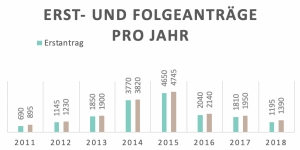

<!DOCTYPE html>
<html lang="en">

<head>
    <meta charset="utf-8">
    <meta name="viewport" content="width=device-width, initial-scale=1.0, maximum-scale=1.0, user-scalable=no" />
    <title>SlideMenu</title>

    <link rel="stylesheet" href="https://unpkg.com/leaflet@1.0.3/dist/leaflet.css"
        integrity="sha512-07I2e+7D8p6he1SIM+1twR5TIrhUQn9+I6yjqD53JQjFiMf8EtC93ty0/5vJTZGF8aAocvHYNEDJajGdNx1IsQ=="
        crossorigin="" />
    <link rel="stylesheet" href="http://maxcdn.bootstrapcdn.com/font-awesome/4.7.0/css/font-awesome.min.css">
    <link rel="stylesheet" href="L.Control.SlideMenu.css">
    <link rel="stylesheet" href="bootstrap.min.css">


    <script src="https://unpkg.com/leaflet@1.0.3/dist/leaflet-src.js"
        integrity="sha512-WXoSHqw/t26DszhdMhOXOkI7qCiv5QWXhH9R7CgvgZMHz1ImlkVQ3uNsiQKu5wwbbxtPzFXd1hK4tzno2VqhpA=="
        crossorigin=""></script>
    <script src="L.Control.SlideMenu.js"></script>
    <style>
        h1 {
            background-color: rgba(242, 242, 242);
        }
    </style>
</head>

<body style="margin: 0; padding: 0;">
    <div id="map" style="position: absolute; width: 100%; height: 100%;"></div>
    <script>
        var map = L.map('map').setView([52.505, 13.43], 13);
        L.tileLayer('https://{s}.tile.openstreetmap.org/{z}/{x}/{y}.png', {
            maxZoom: 18,
            attribution: '&copy; <a href="https://www.openstreetmap.org/copyright">OpenStreetMap</a> contributors'
        }).addTo(map);

        // contents
        var left = '<h4>Info</h4>';
        var contents = '<hr>';
        contents += '<h5>Schweiz</h5><br>';
        contents += '<br>';
        contents += '<br>';
        contents += '<br>';
        contents += '<p align="justify">Insgesamt ist die Zahl der Asylgesuche aus allen Herkunftsländern 2018 gegenüber 2017 deutlich zurückgegangen. Dies zeigt sich auch in den Statistiken über Asylsuchende aus Syrien. Die Zahl der Menschen aus Syrien, deren Schutzbedarf von den Behörden anerkannt wird, ist nach wie vor hoch.<br>';
        contents += '<h5>Das Resettlement-Programm der Schweiz</h5><br>';
        contents += '<p align="justify">Für die Mehrheit der Flüchtlinge bleibt die letzte Hoffnung auf eine dauerhafte Lösung für ihre Existenz die Niederlassung in einem dritten Land, wie zum Beispiel der Schweiz. Seit 2013 hat die Schweiz über 3‘500 syrische Flüchtlinge aufgenommen, die zuvor vom UNHCR als verletzlichste Schutzsuchende identifiziert worden sind. Die Kriterien der Schweiz für eine dauerhafte Aufnahme sind: erhöhten Schutzbedarf, Wille und Potential für eine Integration, zwischen 40 bis 60 Prozent Frauen und junge Frauen sowie sieben Prozent behinderte, ältere oder kranke Personen. Im November 2018 hat der Bundesrat bekräftigt, das Resettlement-Programm weiterzuführen und alle zwei Jahre weitere 1‘500 bis 2‘000 syrische Flüchtlinge sowie Schutzsuchende aus anderen Ländern aufzunehmen.<br>';
        contents += '<p align="right">Quelle: www.fluechtlingshilfe.ch<br>';

        //            L.control.slideMenu(left + contents).addTo(map);

        var slideMenu = L.control.slideMenu('', { position: 'topleft', menuposition: 'topleft', width: '30%', height: '100%', delay: '20', icon: 'fa-chevron-right' }).addTo(map);
        slideMenu.setContents(left + contents);

    </script>
</body>

</html>